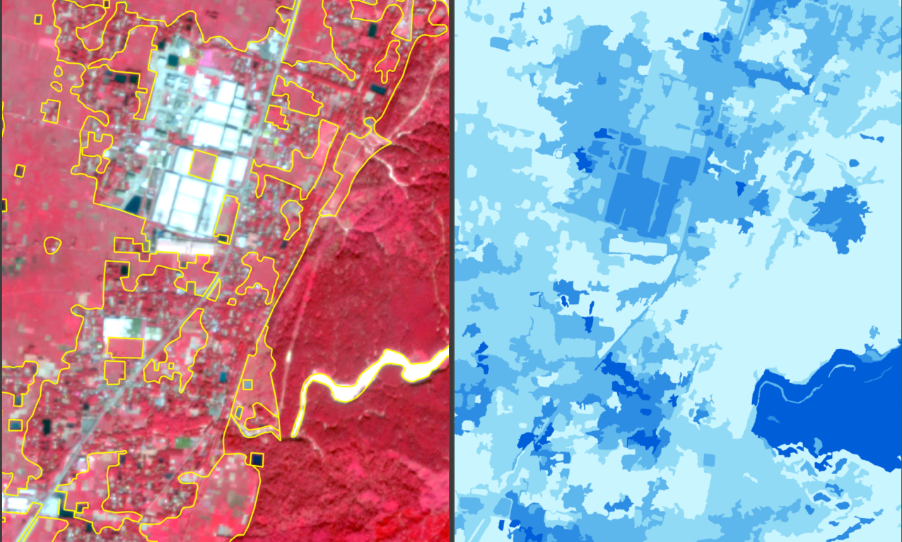

Spatially Representative Training-Sample Selection for Large-Area Satellite Imagery
Selects distributed reference areas that preserve the landscape diversity of a much larger satellite-image extent.
- Research focus
- Reduce annotation effort and sampling bias without losing geographic representativeness.
- Methods & data
- High-resolution satellite imagery · spatial grids · spectral, land-cover and landscape diversity · distributed sampling.
- Current stage
- Ongoing · method development, representative-feature design and testing.

Research rationale and objective
Research overview
The study compares candidate areas using spectral, land-cover and landscape diversity, with the goal of selecting approximately 100 km² from a 600 km² high-resolution image.
1. Research motivation
Problem context and research need
Preparing detailed reference data across large satellite-image extents requires substantial time and manual effort.
Training areas selected only through visual judgement or convenience may fail to represent the full diversity of a study region. This can introduce sampling bias and reduce the geographic reliability of GeoAI and remote-sensing models.
The research therefore explores a systematic approach for identifying a smaller and more representative reference subset without requiring annotation across the entire image.
2. Research objective
Conceptual direction
Efficient reference preparation. Reduce the spatial extent that requires detailed annotation while retaining broad study-area representation.
Geographic reliability. Select distributed reference areas that collectively reflect spectral, spatial, land-cover, and landscape diversity.
Methods and current progress
3. Current research progress
Work presently under development
| Research component | Current focus |
|---|---|
| Conceptual framework | Development of the representative-sampling research framework. |
| Image preparation | High-resolution satellite-image and spatial-grid preparation. |
| Variable identification | Identification of variables that may represent spatial and landscape diversity. |
| Sampling strategy | Development of the distributed reference-area selection strategy. |
| Evaluation planning | Experimental design and evaluation preparation. |
Contribution and applications
4. Expected research contribution
Anticipated methodological and applied value
- Reduced manual annotation requirements.
- Improved spatial representation of training data.
- Lower sampling bias.
- Stronger model generalization.
- More efficient large-area GeoAI applications.
- A reproducible framework for representative reference-area selection.
5. Potential applications
Possible domains of use
- Training-area selection for large satellite scenes
- Efficient annotation planning
- Geographically balanced reference-data design
- Model-transfer evaluation
- Large-area remote-sensing mapping
6. My contribution
Research responsibilities
- Spatial sampling-strategy design
- Satellite-image and diversity-feature preparation
- Candidate-area selection and comparison
- Experimental evaluation and interpretation
- Figure and manuscript preparation